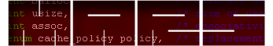

|
|
|

|

|
|
|


|
|
|
Hasta la vista, MARS !!
MARS (Microprocessor Architecture Research Society) was colonized by Commander Hsien-Hsin Sean Lee in 2002 and was freed in 2014. The page is provided as-is with little update.
The chartered mission of MARS Lab used to explore, research and bridge circuits, architecture, compiler, and software techniques to improve energy, performance, reliability and security for modern microprocessor architectures and computing systems.
Martians no longer stationed at MARS. Please consider CERCS (Center for Experimental Research in Computer Systems) and Comparch (Computer Arch Research At Tech).
News
December 4, 2014
Congratulations to Dr.-to-be Sungkap Yeo for passing his dissertation defense.
August 1, 2012
Congratulations to our former MARS crew Prof. Taeweon Suh who has been recently promoted to the Dean of the College of Education at Korea University (KU). Don't get confused with this Dean from our very own Dean, however.
July 27, 2012
Congratulations to Martians No.7 and No.8 Dr.-to-be Nak Hee Seong and Dean Lewis for completing their mission with us. Dr. Seong will return Samsung to help their plan of dominating the semicondutor world while Dr. Lewis will join IBM in Burlington to revolutionize IC manufacturing while enjoying the mountain view.
October 6, 2011:
Please join me to congratulate our labmate Jen-Cheng (Tommy) Huang for winning the Best Paper Award of the ACM/IEEE Sympooisum on Architectures of Networking and Communications Systems (ANCS 2011)
August 15, 2011:
Prof. Hsien-Hsin Lee received the IBM Faculty Award, 2011. He will be working with IBM researchers on emerging non-volatile memory technologies, in particular, for reliability and memristor implication-based computing.
January 18, 2011:
Please join me to congratulate Nak Hee Seong and Dr. Dong Hyuk Woo for getting the first Georgia Tech paper into IEEE MICRO Top Picks from the Computer Architecture Conferences to appear in Jan/Feb 2011. The paper, based on their ISCA-37 paper called Security Refresh, proposed a novel wear-leveling mechanism for Phase-Change Memory. Now the flood gate is open again like we opened the ISCA gate in 2005. We anticipate more Top Picks in years to come !
January 18, 2011:
Martian No. 2, Prof. Weidong Shi is officially joining the Computer Science Department as a tenure-track Assistant Professor at University of Houston after a couple of stint as an entrepreneur in game industry and a research scientist at Nokia Research. Rock on ! Prof. Shi.
December 17, 2010:
Dr. Dong Hyuk Woo Martian No. 6 and grand slam title holder had completed his arduous yet most memorable journey in our base. He has turned himself into one of the most wanted in the community and is continuing his next adventure at Intel Labs. Adios ! Dr. Woo, you will be fondly missed and your legend will continue to be extolled at Georgia Tech.
August 19, 2010:
Join me to congratulate Martian Dong Hyuk Woo hit the "grand slam" in computer architecture. He published 4 papers in ISCA, MICRO, ASPLOS, and HPCA, all in 2010, the same year. (He first-authored two of them.) Even if this may not be a new record for a graduate student in our community which I cannot recall anyone did, it is a rare honor. Job well done, Dong Hyuk!
March 1, 2010:
Georgia Tech will host two main computer architecture conferences IISWC-2010 and MICRO-43 back-to-back in December this year. Several GT faculty and student are involved in organizing these events. Please submit your best works, we are looking forward to seeing you at Atlanta.
January 13, 2010:
Congratulations to Andrei Bersatti for being selected to receive the VPAD FOCUS Fellowship sponsored by IBM.
September 11, 2009:
Our 3D prebond testable clock design paper was nominated for the Best Paper Award by ICCAD-09.
August 12, 2009:
Congratulations to Dr. Mrinmoy Ghosh whose ISLPED-09 paper was selected as one of the seven highlighted papers in the program.
May 1, 2009:
Mrinmoy Ghosh, after all these years' hardwork publishing in several different areas, was finally hooded at Georgia Dome. Congratulations! After MARS' mission, unlike previous MARS lieutenants who joined Intel, Dr. Ghosh will actually help ARM to fight against ATOM's malicious takeover in the embedded market, another holy mission. Godspeed, Dr. Ghosh!
September 16, 2008:
Former Martian Dr. Taeweon Suh recently joined the CSE department at Korea Univeristy as an Assistant Professor. The first Martian attempts to colonize a foreign, virgin territory. Way to go, Prof. Suh !
March 28, 2008:
Chinnakrishnan Ballapuram successfully passed his Ph.D. dissertation defense, titled "Semantics-oriented Low Power Architecture." Congratulations! Now his official full name will be even longer.
February 29, 2008:
Prof. Lee is found to be correctly speculated! He's now ready to rock the world. :)
September 20, 2007:
Dong Hyuk Woo's parallel-on-die architecture paper was selected as one of the four finalists for the Best Paper Award in the Award Session of the 11th High Performance Embedded Computing (HPEC-07) Workshop held at the MIT Lincoln Labs.
August 27, 2007:
Dr. Taeweon Suh's FPL paper on using FPGA for multiprocessor architecture research was nominated for the Best Paper Award in the 17th International Conference on Field Programmable Logic and Applications (FPL-07).
April 5, 2007:
Eric Fontaine received the Outstanding Computer Engineering Senior Award from the 2007 Roger P. Webb Awards Program in the School of ECE.
January 23, 2007:
Prof. Lee received the NSF CAREER Award.
August 16 2006:
Seven papers (including two from MARS) bearing Georgia Tech name will appear in the 39th IEEE/ACM International Symposium on Microarchitecture (MICRO-39), which makes our papers 1/6 of the conference program. Congratulations to all the eager beavers who made this unprecedented achievement for Tech!
April 25 2006:
Prof. Lee was named the recipient of the 2006 ECE Outstanding Junior Faculty Member Award. The award was presented at the 2006 Roger P. Webb Awards Program at Georgia Tech.
April 25 2006:
Taeweon Suh's Ph.D. dissertation research was accepted by the 9th SIGDA Ph.D. Forum to be held at the 43rd Design Automation Conference (DAC).
April 18 2006:
Weidong Shi successfully defended his doctoral oral defense, titled "Architectural Support for Protecting Memory Intergrity and Confidentiality." Dr. Shi will join Motorola Labs at Schlumberger, IL.
Sept 30 2005:
Fayez Mohamood won the Best Paper award at 2nd IBM PAC2 conference for his paper titled "DLL-Conscious Instruction Fetch Optimization for SMT Processor", co-authored with Mrinmoy Ghosh and Hsien-Hsin S. Lee.
July 20 2005:
Prof. Lee received the Department of Energy Early CAREER PI Award.
|
|
|
|
|
|
|
20 Child Street
Cambridge, MA 02141
|
You are visitor # . .
|
http://hsienhsinlee.github.io/mars.html
650-709-9452
|
|
|
|
|
|

{kind=link}